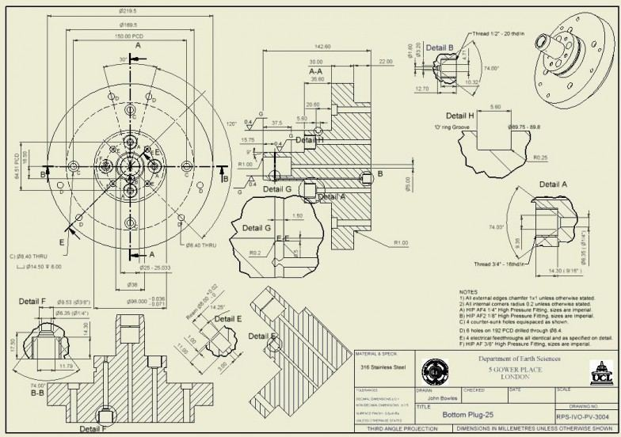
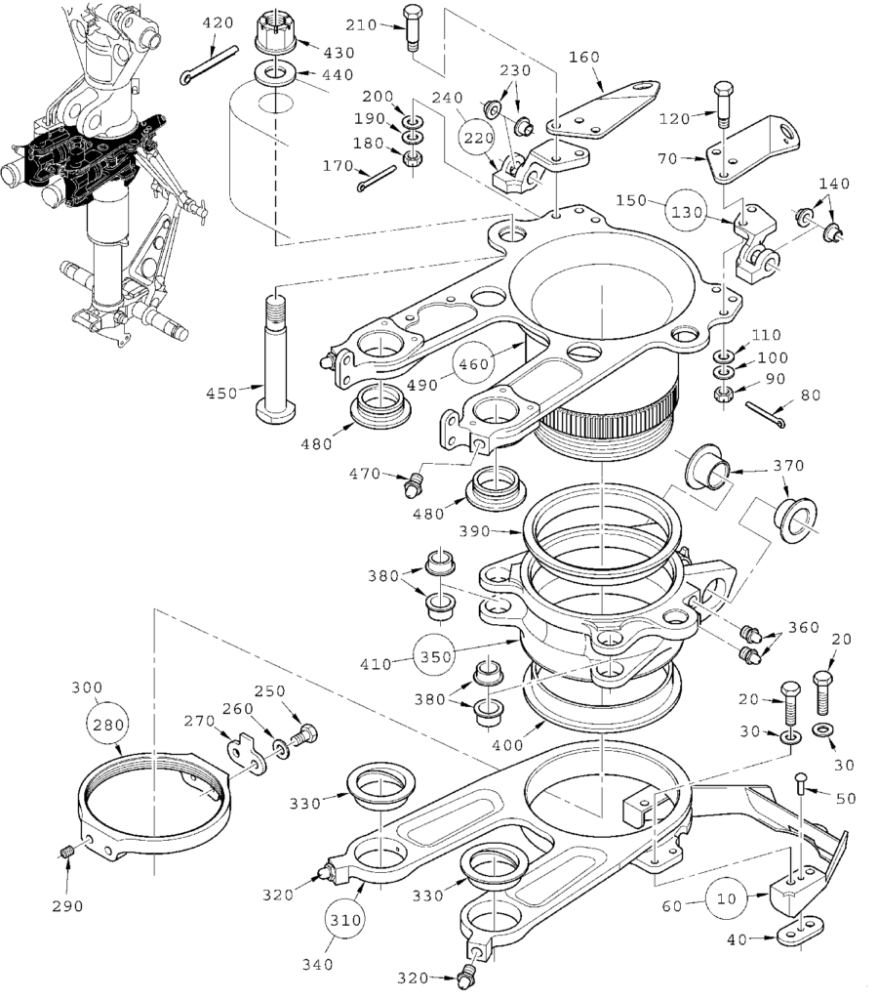
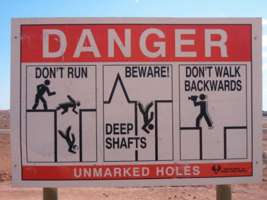
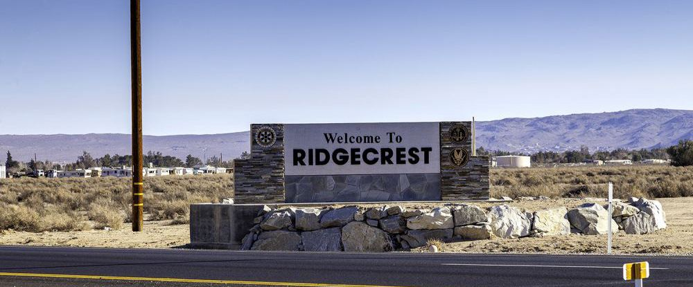
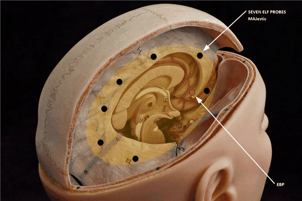
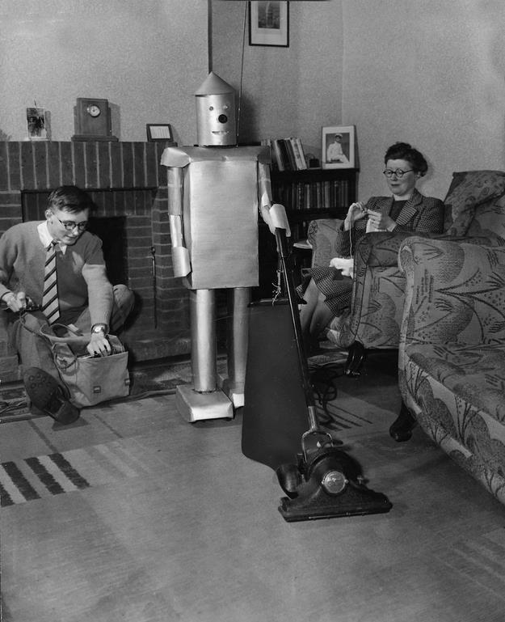
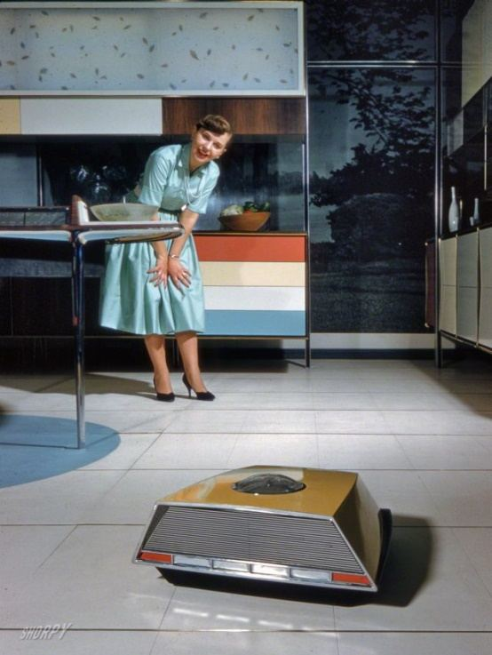

This particular post discusses how I found my way back to the Navy again, and began my “training”. I left my life as a short-order cook in California and went into the desert to a Naval base located in the middle of the remote desert. At that time, I had no memory that I was part of a secretive military program, and thus the “special assignment” held little tangible meaning for me.
Later, however, things became crystal clear and the relationship between the Naval base in Florida, and the Naval base in California took on a new dimension. This is the story of that time as well as what happened as a result of the turn of events.
Introduction
“Yes, there have been ET visitations. There have been crashed craft. There have been material and bodies recovered. There has been a certain amount of reengineering that has allowed some of these craft, or some components, to be duplicated. And there is some group of people that may or may not be associated with government at this point that have this knowledge. They have been attempting to conceal this knowledge. People in high level government have very little, if any, valid information about this. It has been the subject of disinformation in order to deflect attention and create confusion so the truth doesn’t come out. ” ― Edgar D. Mitchell, The Way of the Explorer: An Apollo Astronaut's Journey Through the Material and Mystical Worlds
I quit my job at the restaurant, and drove the six hours to Ridgecrest. The company provided me with a car rental (a Ford Thunderbird) and I drove out from San Louis Obispo to Ridgecrest. (A long and bending road. It was quite exhausting.) We drove the car, loaded with our belongings, behind the new motorcycle that we had just bought. We drove and drove. I seem to recall that it took us six hours to drive from where we were to our destination. They put me up in a nice hotel there and fed me well.
I went from being treated as a blue collar (limited skill) laborer to suddenly receiving VIP treatment. Even though I was being interviewed for a “technician job”, the company hired engineers, and I was treated as a very special person indeed. I received a technician pay at an equivalent GS-5 level, but an engineers per Diem, with various bonuses to make up for the difference.
Of course, to everyone, I was just another base contractor. The only people who were in the loop as to who I was, and why I was there was [1] the man who hired me, and [2] the people who trained me. Even at that point, I had “forgotten” who I was and how important I was.
I interviewed and went to the facility without any active memory of my past, and who I actually was.
The Interview
“As it happens, after giving a public talk a couple of years ago, I was approached by a man who had been a uniformed member of the United States Navy. We chatted for a while and when he mentioned that he had spent some time at China Lake my ears perked up. I asked him if there was an underground facility at China Lake. He said that indeed there is, and that it is impressively large and deep. I asked him if he had ever been in it, and he said that he had, though not to the deepest levels. I asked him how deep the deepest part extended. He looked at me soberly and said very quietly, “It goes one mile deep.” I then asked him what the underground base contains. He replied, “Weapons.” I responded, “What sort of weaponry?” And he answered without pausing, “Weapons more powerful than nuclear weapons.” -Richard Sauder, Hidden In Plain Sight, Beyond the X-Files. Keyhole Publishing Company. March 2010
I was put up in a very nice hotel in Ridgecrest, and the next morning I drove over to the facility.
The company was called “Comarco Weapons Support Division” and was located right next to the hospital. While I can’t find anything on the Internet (Google, Bing, and DuckDuckGo) on this company, I can assure the reader that it did exist, and they did actually pay me.
Ah, that’s the problem with the Internet these days. It’s like a big white board, constantly being erased and rewritten over.
Ha ha. Google is useless. However, if you type in “Comarco WSD” in the career website LinkednIN, you will get hundreds of hits of former employees. LOL.
You do have to be careful as there is also a consumer appliance company, also in California, with exactly the same name! How is this actually possible? (Yes, it’s going to be pretty hard to explain why an engineer with experience in testing missile systems used to work at a consumer appliance company. Yup!) So Google might be able to erase the existence of this company, but it is actually doing a disservice to all the former employees of the company.
The job interview was odd, primarily because, I was already hired. This interview was only a formality. I did not know it, at the time, but the body language and the way that the position was discussed told me everything.
Of course, I had no awareness of why I was being hired. I thought that it was because of my educational background. I don’t think that the man who interviewed me realized that I had no memory of my true role.
He spoke to me in a coded way with circumnavigating sentences and questions targeted at how much I actually knew about the secret program that were being developed there.
“For you to grow, there has to be something in your life that is difficult and challenging. There has to be a goal where the chance of failure is very possible, and it has to be hard enough where you’ll be required to call upon forces within you that you didn’t know existed. There has to be a point where you wonder to yourself, “Maybe I can’t do it—maybe I’m doing all this for nothing.”” -Rooshv
He Spent a Year Searching for Me
What helped boost my ego was that he told me that he had spent a year searching for me. Of course, since I had no recollection of my true and real purpose, I thought this was based on my technical skills alone. He told me that he looked all over for me. He didn’t know what happened to me after I left the Navy.
He realized that I have disappeared into civilian life. As that is what he had done after he left the US Air Force. He used to be a pilot flying the F-111 fighter bombers. And this similarity to his own experience was known and relatable. (In my dreams. At least he finished flight school and was operational.) He initially tracked me to my parents’ house, but lost track of me after I started to look for work in California. He confirmed to me that when I started to search for work in California was at the exact period of time that he began searching for me. It was quite a coincidence.
It was quite a coincidence. (Nothing on the earth is ever a coincidence.)
This was not your Typical Assignment
“Chatterton spat on the green grass and rubbed it in with his boot, "I don't like it, I don't like it. If anything happened to us, no one on Earth would ever know. Silly policy: if a rocket fails to return, we never send a second rocket to check the reason why." "Natural enough," explained Forester, "We can't waste time on a thousand hostile worlds, fighting futile wars. Each rocket represents years, money, lives. We can't afford to waste two rockets if one rocket proves a planet hostile. We go on to peaceful planets, like this one."
Using his triangle shaped ring, and aggressively toying with it, he emphasized that this was a (he paused when he said this) “special assignment”. He told me that only a very precious few people could do what I can do. He said that the number of people who had this skill could be counted on one hand, and all of the other people had already done this “task”. That only I and one or two others remained to do the job.
Triangle shaped Ring. This was a simple gold ring with the clear shape of a triangle on it. It was clean and unadorned, but definitely noticeable. Only a handful of People were like me. At the time, I thought that he was just making polite small talk. In hindsight, yeah… having the ability to do autonomous dimensional world-line travel WAS a unique ability. However, at the time, I was unaware that I had this ability. While it manifested quite naturally, as money appearing when I needed it, and good luck abounding, I associated it with fate, not my whims molding reality around my thoughts and my desires. One Hand. One hand has five fingers. Yes? If there were only a handful of us of us, and there were <redacted> at the <redacted> facility; who were the <redacted> of the <redacted>? Were they human or something else altogether? This is one of those points that makes me question everything that I experienced. For, if they were another species; and they had to be because the “chatter” that we listened into supported that contention, then what species were they? They weren’t <redacted> nor <redacted> species. They must have been something else altogether. Think about that for a minute.
Of course, it sounded a bit confusing to me, because I had absolutely zero recollection of what transpired at the base with the Commander. So I reinterpreted this as a reaffirmation of my technical prowess, and ability. This is pretty arrogant of me, because he said that my assignment would be at a special test facility deep within the naval base. He said that it would involve ELF testing and evaluation of special project.
During this discussion he (name <redacted>) never mentioned that I would be doing anything secret. Instead he stated that I would have to get a “Confidential” access badge to enter certain portions of the base, and a special “Secret” access badge to enter the more remote and secure facilities. He stated that I and another person were hand-picked for this assignment and that we would know exactly what to do and how to do it.
He also said that he was very, very, VERY honored to meet us and looked forward to working with us on this most exciting of programs.
In fact, I really need to impress to the reader, just how blatant the fawning over me was. I was very happy to be treated so well, and so respected. But this was way over the top.
At the time, I just considered myself somewhat special, but not ACTUALLY anything special. I just just “another” unemployed engineer looking for work. Sure, I had lived in a van under difficult conditions. However, no one aside from my wife and myself were aware of this fact.
What did he know that I did not?
Yet for all the fine platitudes and positive language, he never mentioned what we would be doing or what our roles would be. All he could say is that we would know exactly what to do once we were assigned our roles at the remote test facility.
Ah… that “you will know what to do when the time comes” bullshit.
I would start off with a confidential clearance so that I would start work immediately at the Contractor’s main building. That building was not on the base. It was outside the base, near the hospital. Then, when the test facility was available, I would have a Secret Clearance that I could use to access it on the base.
I could not enter the base proper until I obtained the proper security clearances. This took time.
All contractors had two badges. One [1] for access to the contractor’s building(s) and another one [2] for access to the base (and the sub-areas within the base). We kept them together, back to back. On one side was the off-white badge for Comarco, with a red line on the bottom. On the other side was the red contractor badge with various holes punched out and a (reasonably) larger text of “MAJ” off to the side.
Red Color Line Means “secret”. Green color means “confidential”. There was also a third type which was “no color”. It means that the employee had no base clearances. Green Color Badge It was “green” color when I arrived. I kept this badge for the first six months at the company. Once, I was approved for secret access, I obtained a new badge that was “red” in color. The holes on the outer edges, were as I recall, not changed when the two badges were swapped out. Red Color Badge Like the green badge only it had two major differences. One, the color was RED, and not Green. And, secondly, in capital letters, was the word MAJ like this; “MAJ”.
About those holes; Along the periphery of the badge were an array of boxes. Each box represented a specific region that the holder of the badge had access to. If you had access to that region, you would have a hole punched in that box. The badge color, as well as a colored line under your photo indicated the level of clearance that you had access to. Green was for Confidential Clearance, and red was for Secret Clearance.
While I would have secret clearance, it was limited to only three specific regions deep inside of the base, miles away from the main base facilities.
The Facility was being used
The facility that I needed for my “special assignment” was currently being used, so I would have to wait until it was available.
He told me that the location where I would be working was involved in another project. So it is not immediately available. His solution would be to hire me as a “draft checker” until the facility would be available. A draft checker is a person who verifies that all the blueprints and drawings are correctly done. They verify that the numbers are correct, and that the documents meet industry standards.
It is an easy, low impact, job. But one that needs to be done.
Drawings Correctly Completed The drawing is made up of a variety of separate related orthographically projected views. First done on a drafting board then moving into the electronic drafting packages. Sadly, the most popular electronic drafting package at that time was Autocad. It was an overly complex architectural package and since it had no copy protection was quickly adopted to provide drawings for mechanical engineering. Mechanical engineering drawings are basically started with parallel lines, created by sliding triangles or using a T-Square, Parallel Bar or Drafting Machine.

The drawing was usually done by the drafter. Drawings could be very tedious and a complex drawing could take days and even weeks to complete. Changes were difficult and may require extensive use of the electric eraser. The electronic drafting packages relieved a bit of that pain. But you still had to change each related view separately. Which opened the door to errors.

To call these drawings 2D is a bit of a misnomer. These were schematics or illustrations that described parts, notice I didn't say 3D part, that would be silly and redundant. They were done to a set of standards developed over centuries. An engineer or drafter would look at these drawings and see the part. This was called "being able to read a drawing". Now don't discount the drawing, virtually every Boeing airplane from the 767 down were done only with drawings. Drawings contained all the necessary information for manufacturing to make the part. They were released to the other departments in the company as copies called blue prints.
He told me that I might have to wait in this role from nine months to one year before the test facility would be available. Truth was, it took a little over one year, before the facility was ready.
He introduced me to another Special Worker
While I was there, he introduced me to another worker.
He had mentioned this to me on the telephone when we had talked. However, at the time, I thought nothing of it. Then, later in his office, he picked up the telephone and made a call. He hung up the phone and said “There is another fellow whom I want you to meet.”
This man was about my age.
He was already working as a contractor, but he too was waiting for the facility to be available. He was also a trained engineer like myself, but was working as an electrical technician at the time.
To me, he looked vaguely familiar. His hair was longer, and he had “filled out a little bit”, and he had a mustache. But there was no mistaking it.
My co-worker was Sebastian! The same Sebastian that I met at the naval base years ago! The same Sebastian who was enrolled in the Navy aviation program with me. The very same Sebastian that joined MAJestic with me, and who egressed from the dimensional port with all the pretty girls.
What a strange coincidence!
He shook my hand, and did so with a certain type of two-finger grip. I also did so, though I must confess that it came to me automatically. I know (now) that it was a “so-called” secret society style of greeting. But I had no previous experience, or training in it. It just fell into place naturally.
He also made the sign of the triangle. We felt like brothers. We made some small talk without saying much of anything of significance. It was just a lot of small talk. I asked him how long he had been working at Comarco, and he answered “just a few months”. I asked him what he thought of the desert, and he asked me about what I thought about California. We just made small introductory small talk.
We talked about getting to work together in the near future and then he left.
About the "Secret" Handshake Yet another mystery surfaces; how did we instinctively know to meet and greet each other in this manner? How did we understand what it meant? I say this most clearly; I have had no, absolutely no, training or background exposure to secret societies and clandestine greeting methodology and skills.
We never, during the entire time that we worked together, discussed the time we had together at NAS NASC Pensacola. We only mentioned our experiences with the vaguest of references. It was as if we didn’t want to say too much about it. We together just recognized each other and our roles together in the future.
I would be hired immediately
After we chatted, he took me down the hall to a manager in charge of the drafting group. This group supported efforts for all the other groups in the building. It was a support group for the design groups that worked on the base.
This group handled all the documentation required for all the projects on the base. The group has draftsmen, designer, illustrators, and technical writers. My role would be as a draft checker to support their efforts.
As such I would have a room all to myself, and I would be given a salary and an income to enable me to stay near to the base while the test facility was being readied.
Working as a contractor
I immediately began work as a contractor. It was easy work. I was able to easily transition into the often obtuse world of the military contractor. As such, I received my security clearances, and began by working the standard life of a military contractor in the high desert of California.
Working in the remote desert was quite different than working in a conventional city. Ridgecrest was a world of its own. It was beautiful and peaceful. It was very scenic and calm. The people were all very nice, and relaxed.
Most of the people who lived in the town either worked on the base, or worked at one of the stores or businesses that supported those who worked on the base. It was small, out of the way community sporting some new homes, strip malls, and a handful of restaurants. Out in the desert lived wild, grizzly prospector types whom still mined the desert for treasures in the form of ores.
Ridgecrest is in the absolute middle of the desert. It has the absolute feel of a desert. As you drive along the road, dry sagebrush will dance and blow across the road. There are no trees. The sky is big and huge and brilliant blue. There are few clouds in the sky. Surrounding the city are sandy-dirt roads that criss cross the flat plains.
Ridgecrest For the record; I have never been to or been associated with the “so called” UFO capital complex of “Area 51”. It might be all disinformation for all I know. The only training and work that I was involved in occurred at but two naval bases. That was it. I know nothing, absolutely nothing, about Air Force involvement with UFO’s, or that of any other branch of service. My role was specific. My training was specific, and my tasking was specific to my mission. Sagebrush Sagebrush is the common name of several woody and herbaceous species of plants in the genus Artemisia. The best known sagebrush is the shrub Artemisia tridentata. Sagebrushes are native to the North American west.
It is calm.
Calm, so very calm. The wind whispers.
Softly. It’s almost magical.
Life in Ridgecrest
Life in Ridgecrest was one of having a perpetual cricket hidden (somewhere) in your living room.
It was a life were “swamp coolers” (Evaporative coolers) were used instead of air conditioners, but people rarely cleaned out the filters; allowing toxic and dangerous micro-organisms to grow and thrive in your air supply. (It was also where black widow spiders preferred to hide. Yikes!)
It was a world of relaxed calmness and immense beauty and a big blue sky that seemed to go on forever.
You had to carry water with you at all times to keep hydrated. Otherwise the dry air would cause one to pass out without notice.
Tarantulas spawned in March and swarmed all over the dirt roads in a tangled confusion as they scampered under the blazing orange sagebrush. They were only the size of a quarter and grey in color.
It was a world of high-tech military contractors and grizzly old prospectors. It was a special place at a special time.
Surrounding the area are old mines. Some of them look like traditional wooden framed tunnels into the side of the mountain, but most of them are simply a hole in the ground. That is it.
You are walking around the flat desert, and suddenly you come across a gaping hole in the ground. We all know of stories of guys who have gone out walking into the desert and fell into one of these holes, only to be discovered many months later. Their skeletal remains found inside tattered scraps of clothing. At other times, dirt-bike riders were found collapsed under the weight of their motorcycle at the bottom of a mine-shaft. Some of these holes are protected with a chain-link fence, but many are not.

Assignment of my Access Pass
Exactly according to plan, I engaged in a low level of technical grade work at the contractor, with occasional forays onto the base for various reasons. I was given the pay classification of a GS-5, with the promise of a salary increase to a GS-7 within a year (once my security classification was upgraded). I continued in this role for about nine months. It was uneventful.
GS-5 This was the lowest pay grade that a person could get at my role. It was also the easiest for them to process a security classification for me. As a W(U)-SAP no one knew “bumpkis” about me, but I did need to have access to my training. So this was how it was done.
Then, one day, I was called into the office of my immediate supervisor. He told me that I would be transferred to a position on the base itself. And that this would begin immediately.
He then, introduced me to another man who was in charge of the testing facility. This supervisor did not know my true identity, and reason for being there. All he knew is that I was given an “assignment” on the base to do some “research” in accordance with some alpha-numerical designation. Duration of the contract was to completion of the specific task at hand.
We got along fine.
He was nice, friendly and quite laid back, as anyone would be after spending twenty years living in the desert. He looked more like a cowboy than a technical professional. He drove an old 1940’s pickup truck that matched the atmosphere of the region quite nicely. While he discussed how one day he would “fix it up”, for then at that time, it was being held together with a mixture of duct-tape, bent clothes hangers, and braided nylon rope. It was a distressed and dusty truck at once both awful and at the same time; adventurous.
Together he drove me out to the test facility on the base, for a look around, and to tell me how to get to the base work site from now on.
Training on utilization of the devices
“There is abundant evidence that we are being contacted, that civilizations have been visiting us for a very long time. That their appearance is bizarre from any type of traditional materialistic western point of view. That these visitors use the technologies of consciousness, they use toroids, they use co-rotating magnetic disks for their propulsion systems that seems to be a common denominator of the UFO phenomenon.” - Dr Brian O’leary, Former NASA Astronaut and Princeton Physics Professor
Training on utilization of the devices inside my skull, and associated interfaces, as well as the various techniques and abilities it gave me occurred at The China Lakes Naval Weapons Center in Ridgecrest, California (NAS China Lake). For me, calibration, and training of cores I through V, occurred up through 1986. After that was the adjunct mandatory suppression of memory (you never forget, just access it differently), and then (again) release as a civilian to the world.
Contrary to conventional Internet UFO and extraterrestrial lore, I had no exposure to anything resembling “Area 51” or any of the often repeated areas of unusual activity. I never visited these areas, and I never had the opportunity to do so.
While I was there I NEVER saw a “flying saucer” or extraterrestrial vehicle of any kind. My exposure to the military was unique to entry into the program, and training at China Lake. I am sorry to crush the belief structure of conventional UFO and extraterrestrial species lore. That was it.
Nothing that I was exposed to ever referred to this facility; the “Area 51”. Either in name or in code. So, I must tell the reader that I must disappoint. I cannot confirm that it is a hub of extraterrestrial reverse engineering efforts, nor deny it either. For me it is as if it never existed. It simply was part of something that I know absolutely nothing about.
Therefore, I must tell the reader that my experience as AN ACTUAL MEMBER of a sub-program of the MAJestic organization, I had absolutely no exposure to this famous site, or related terminology.
Overview
Three years after entering the transport portal, and the EBP connection to the seven ELF probes, and being lost in the wilderness, I was finally located. As such, I went into a secluded period of training. The training was designed to help me use the ELF probes, and also how to <redacted>. After all, to accomplish my role in MAJestic, I needed to be provided with tools and needed to be trained to use those tools.
We discuss this aspect of my involvement here.
All in all, I went through a series of five stages (or cycles) of training. All of which occurred at the China Lake Naval Weapons Center, outside Ridgecrest, California.
For those of you who do not know, China Lake is in the High Desert of California. It is very beautiful and very, very remote. The nearest decent city was Bakersfield, and that was a 5 hour drive through a winding road across a pass in the mountains. Summer temperatures easily reached 120°F (and sometimes even 140°F), while winter temperatures were quite comfortable. In fact, it even snowed one winter while I was there! (I well remember the one cm of snow that rested on my swamp cooler.)
From Wikipedia... The Mojave Desert is a desert that occupies a significant portion of southeastern California and smaller parts of central California, southern Nevada, southwestern Utah and northwestern Arizona in the United States. The term Mojave originates from the Spanish language while the spelling Mohave comes from modern English. Both are used today. The Mojave Desert displays typical basin and range topography characteristic of a desert environment. Higher elevations above 2,000 feet (610 m) in the Mojave are commonly referred to as the High Desert. Nearby to this region is another well known (but lower) desert; Death Valley. It is the lowest elevation in North America at 282 feet (86 m) below sea level and is one of the Mojave Desert's more notorious places. At Kernville the river emerges from its narrow canyon into a widening valley where it is impounded in Lake Isabella, a reservoir formed by Isabella Dam. The area was once known as Whiskey Flat. It is the former location of the town of Kernville. The South Fork Kern River joins in Lake Isabella. Like the North Fork, the South Fork rises in Tulare County and flows mainly south, through Inyo National Forest. After entering Kern County the South Fork curves to the west and flows into Lake Isabella. Below Isabella Dam the Kern River flows southwest through a spectacular rugged canyon along the south edge of the Greenhorn Mountains, emerging from mountains east of Bakersfield, the largest city on the river. Travel through this winding canyon is an hour long trip of great discomfort for those unaccustomed to it.

To fully appreciate what is going on regarding my training, the reader needs to understand that I was being trained to interface with alien (extraterrestrial) technology.
- This was not advanced human technology.
- This was not second or third generation computer technology.
- This was not reverse engineered foreign technology.
It was very advanced technology that was so unlike anything that we can even conceive of.
Yes it was alien, and yes it was of extraterrestrial origination.
That technology is completely different from everything that we know of and experience. What we know of consists of electronics, mechanical mechanisms, chemical formulations, and some genetic technology in it’s infancy. The technology that I was exposed to was unlike what we know. To describe it to the reader is very difficult as there simply is nothing even similar to it anywhere.
In summary, that technology is [1] very advanced, [2] utilizes a great deal of control (and manipulation) over the “non-physical” aspects of our reality, and [3] has elements that are biological in nature. This technology was certainly centuries in advanced of our technology in physical appearance. This technology was perhaps thousands of years advanced in terms of the utilization and manipulation of the non-physical aspects of our reality, and hundreds of years more advanced in terms of biological manipulation.
If I were to describe how advanced by using a Hollywood movie, how would I describe it? Was it like “Star Wars”? Was it like “Star Trek”? Was it like “Blade Runner”? Was it like “Jupiter Ascending”? Was it like “Dune”? What was it like?
There is nothing, absolutely nothing, that Hollywood portrays that comes even close. So, it is very, very difficult to describe what we were involved in. Thus, to proceed further, we first need to discuss what the technology is that I interfaced with.
Don't know all my movie references, eh? Jupiter Ascending is a 2015 space opera film. The film is centered on Jupiter Jones (Kunis), an ordinary cleaning woman, and Caine Wise (Tatum), an interplanetary warrior who informs Jones that her destiny extends beyond Earth. Supporting cast member Douglas Booth has described the film's fictional universe as a cross between The Matrix and Star Wars, while Kunis identified indulgence and consumerism as its underlying themes.
Biological Artifices
Before we get started in the “meat” of the narrative, let’s “open up” with a brief dialog and discussion about artifices and the need for them. Let’s talk about artifices, specifically “biological” artifices. For me to accomplish my mission parameters, I required “entanglement” (a communication of sorts) with a mechanism known as an artifice.
I went to China Lake to “calibrate” my probes to an extraterrestrial artifice.

The probes were installed in my head by Naval personnel. The “off world” experience, involved the surgery of additional extraterrestrial “equipment” into my head.
However, the two “systems” were not integrated together. That was the purpose of my time at China Lake. They had to be integrated and function together with a biological artifice.
Artifices are not something that is common to most people, Americans, humans or even (learned) scientists to understand. Artifices are an “advanced technology” that describes a manufactured biological enhancement. Human technology has not advanced to that level yet. The closest that we have are computers and cloned embryos. However, we need to understand the basics regarding this subject before we “dive” into the manuscript.
(In this manuscript are unusual and unlikely terms and content. To best help understand the totality of this manuscript; these terms are presented in a staged manner. As such, I present them “piece meal”, or in “bite sized” portions so that the reader can digest them slowly and carefully.
So, while it might seem that I am just circumambulating about in a wildly rambling manner. The truth is, and the facts are, that I am presenting a staged introduction to technologies and information that the reader must understand first before delving too deeply into the depths of this manuscript.)
Let’s start with the most basic premise; that bodies need augmentation to accomplish some tasks.
The Need for Augmentation
The reader should appreciate that the physical body has limitations. You can only run so fast. You can only lift so much weight. You can only think so fast. You can only hold your breath so long. We have limitations.
To extend the limits of our limitations we employ devices. These devices go by the names of mechanisms, contrivances, and appliances. For instance, instead of using our bare hands to dig a hole, we employ the use of a tool; a shovel. If we want to dig deeper, faster, and quicker, we might employ a mechanical ditch-digger or steam-shovel.
Back in the past, say 100 years ago, writers envisioned robots doing the work. The pulp magazines of the time would show a robot with a shovel busily digging a hole while the operator controlled the robot in comfortable abandon.
Steam Shovel Graveyard in Milford Curiously, there is an impressive steam shovel graveyard in Milford, Massachusetts. I was there in the middle 1990’s and saw perhaps 15 steam shovels with my own eyes. There were many more buried in the tangle of wilds that had enveloped the graveyard.
Humans are so simple. We can only envision replacing a tool with either [1] a better tool (a steam-shovel) or [2] another person or contrivance (a slave or a robot) to dig the hole for us. Instead of actually considering the need for the hole in the first place, we instead rely on technology to manufacture the hole.

Other species think and reason differently. For some, they might question the need for the hole in the first place, and find alternatives to making that hole. They might not need to have a tool, and artifice or a slave.

For us, humans, it is rather easy to see the need for a tool. You use a knife to cut onions. You don’t use your hands. You use a knife to cut tomatoes, your fingernails just are not going to cut the tomato slices for a good BLT sandwich. We use tools all the time.
The use of artifices to assist us is a relatively new phenomena.
The migration to the use of an artifice was rather simple. We learned to use tools. Then we improved the tools. The technology “leap” to robots to perform the tasks of humans never really happened. Unless you suggest all the UK media propaganda about sex dolls is accurate. We just don’t have robots taking over the work normally performed by humans. Instead we have robot-like artifices.
We have artifices that can vacuum the floor. We have self-driving cars, which are actually vehicular artifices. We have remote controlled drones, that when placed in automatic-mode behaves as artifices. We use artifices to perform various tasks for us. At this stage in our human technology, the artifices are rather primitive.
They are unable to completely replace a human operator. Though, I am confident, one day they will be able to.
- Artifices are an advanced tool that is used to replace mechanical work normally done by a human.
- What would you use to replace (or augment) the human thought process? Perhaps you would use a computer.
- What would you use to replace the human emotional system? Maybe some kind of bio-chemical system with programmed objectives. You could make someone love you, or create an army of impassioned warriors. Ugh, the notion of this is frightening when one realizes the danger of our fellow humans.
In each case above, we used technology (of different types) to replace or augment something that we humans are accustomed to do. We dig a hole. We plan a party. We fall in love. All of these things, we can replace or synthesize using technology. However, what about an ability that we do not have? How can we use technology to augment that ability so that we humans can benefit?
Before we get started on this subject, I would like to relate a little story.
When I was attending university, we had a professor of “Heat Transfer”. All the students thought of him as a “joke”. He just didn’t have the haughty; “I am a knowledgeable professor with ability and skills” that the other professors carried themselves with. He as easy going. He spoke using conventional terms, and related in a simple way about everything. When he gave us assignments, they seemed too easy. The work load was simple. The tasks were rather easy to conceptualize and complete. The students thought he was a loser. However, the other professors thought highly of him. I, personally, thought that he seemed like a nice guy, but I had to admit that the work level and what he was teaching seemed too easy. I was of the opinion that the class work could have been taught in Middle School, instead of in a university as a college-level class. I graduated from the university thinking that his class was a waste of time. I wasn’t until many years later that I truly began to understand what a genius he truly was. It turned out that one of the most difficult classes for a young engineering student to learn was “heat transfer”, yet our professor made it seem so easy and so simple. We learned rapidly, and effectively. We learned because it seemed so simple to us. We learned because we thought it was easy. We learned because it was easy to understand. He was a genius in his ability to make the absolutely complex seem simple. A “best” instructor teaches in a way that is easy to learn, and impossible to forget.
It is core concept that I try to implement daily. When I try to present the complex to the reader, I will try to make it as simple to understand as possible. I hope that I will be successful in this case…
The idea and concept regarding biological artifices is quite simple. You utilize a biological advantage of a given animal and transfer that advantage to a creature of another species. That is what a biological artifice does. However, we don’t ever do that as humans. For, in our minds, we are at the “top” of the “food chain”. There is nothing that we could benefit with from a different species – we believe.
Conclusion
This is the story of how I was contacted by MAJestic after discharge from the US Navy. I was given a position as a contractor at China Lake NWC. In that position I waited until I could obtain the necessary clearances to go to the remote testing lab where I could be calibrated and programmed. This is how it happened.
Take Aways
- Once I joined MAJestic, I was implanted with 7 ELF probes and a EBP.
- I then was discharged and left on my own.
- This post describes what happened when MAJestic reacquired me and set in place the necessary systems so that I could be calibrated and trained.
MAJestic Related Posts – Training
These are posts and articles that revolve around how I was recruited for MAJestic and my training. Also discussed is the nature of secret programs. I really do not know why the organization was kept so secret. It really wasn’t because of any kind of military concern, and the technologies were way too involved for any kind of information transfer. The only conclusion that I can come to is that we were obligated to maintain secrecy at the behalf of our extraterrestrial benefactors.


MAJestic Related Posts – Our Universe
These particular posts are concerned about the universe that we are all part of. Being entangled as I was, and involved in the crazy things that I was, I was given some insight. This insight wasn’t anything super special. Rather it offered me perception along with advantage. Here, I try to impart some of that knowledge through discussion.
Enjoy.


MAJestic Related Posts – World-Line Travel
These posts are related to “reality slides”. Other more common terms are “world-line travel”, or the MWI. What people fail to grasp is that when a person has the ability to slide into a different reality (pass into a different world-line), they are able to “touch” Heaven to some extent. Here are posts that cover this topic.


John Titor Related Posts
Another person, collectively known by the identity of “John Titor” claimed to utilize world-line (MWI egress) travel to collect artifacts from the past. He is an interesting subject to discuss. Here we have multiple posts in this regard.
They are;